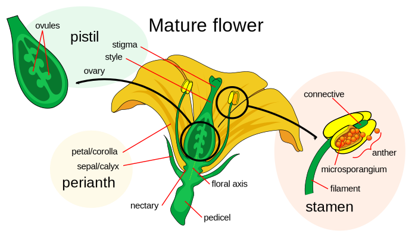

FlowerA flower, sometimes known as a bloom or blossom,is the reproductive structure found in flowering plants (plants of the division Angiospermae). The biological function of a flower is to facilitate reproduction, usually by providing a mechanism for the union of sperm with eggs.
Four basic parts
Flowers have four basic parts, from the outside in they are:
The perianth, the vegetative parts:
The calyx: the outermost whorl consisting of units called sepals. These are often green and enclose the rest of the flower in the bud. They may be absent, or they may be petal-like in some species
The corolla: the petals, usually thin, soft and often colored to attract animals that help pollination
The reproductive parts:
The androecium, the male part, is the stamens
The gynoecium, the female parts
Structure of flowers
To investigate the structure of a flower, it must be dissected, and its structure summarised by a floral diagram or a floral formula. Then its family can be identified with the aid of a flora, which is a book designed to help you identify plants.

Different types of Flowers:
Flower come in thousands of different shapes and color combinations, each with their own name and classification. There are over 400,000 types of flowering plants, so there is sure to be a flower that speaks to your unique personality!